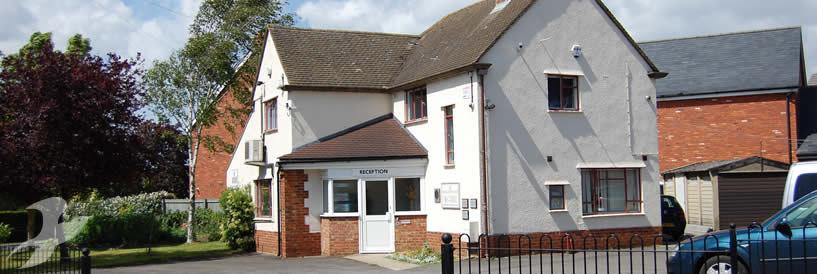
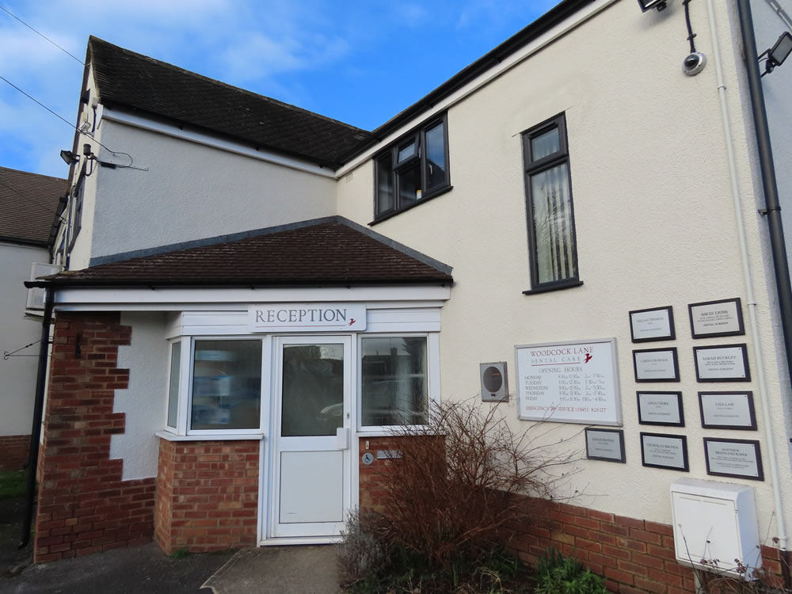
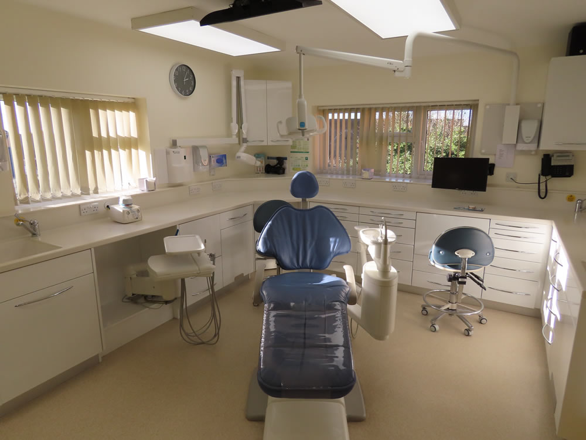
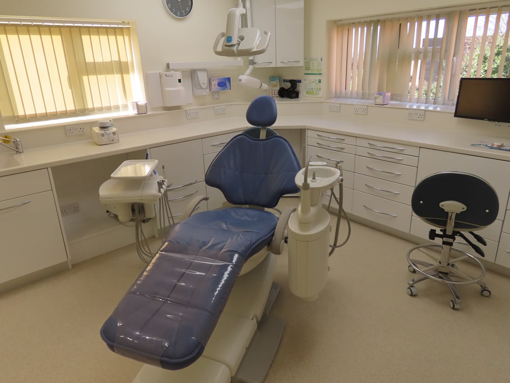
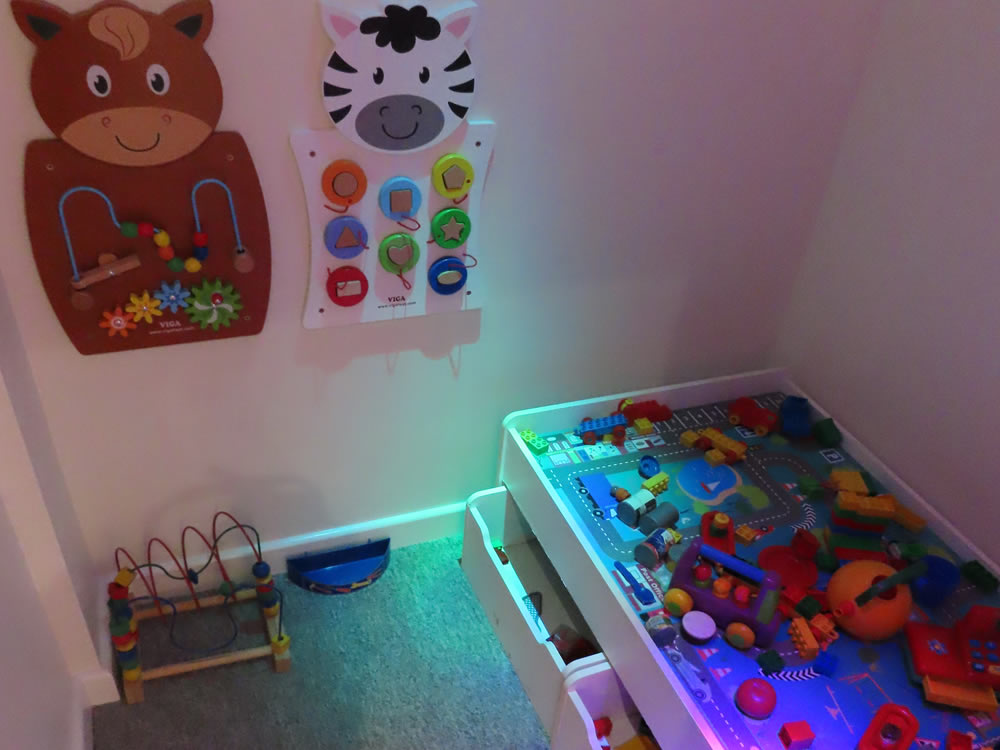
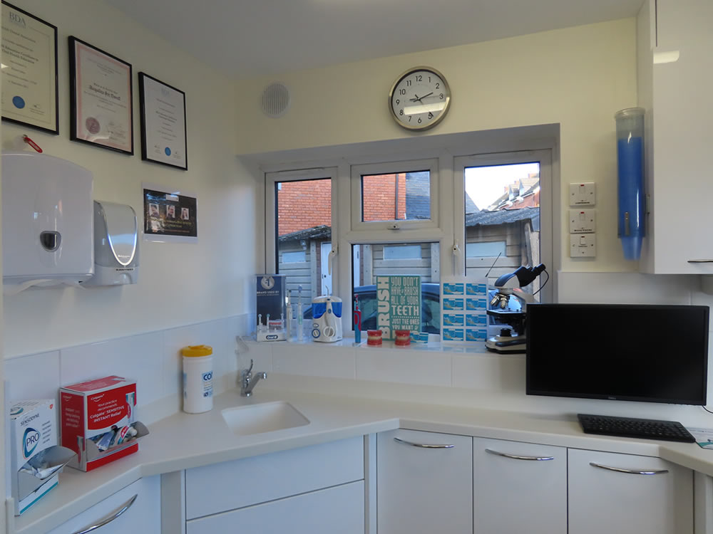
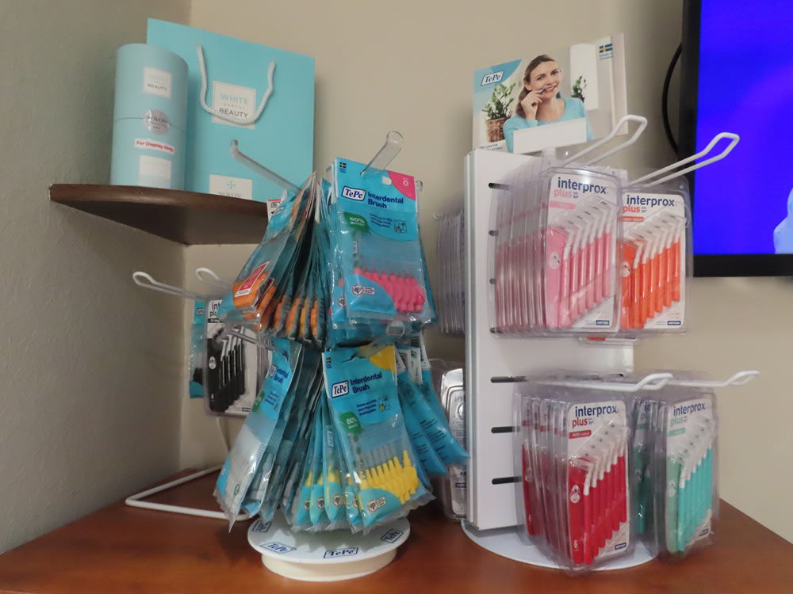
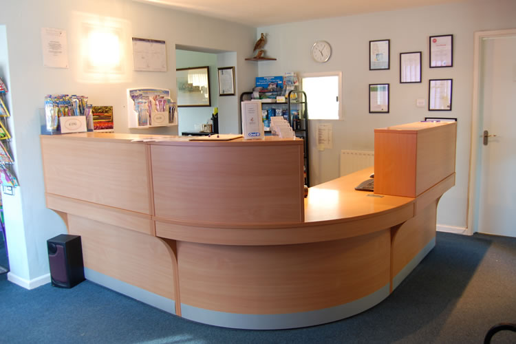

A welcoming, modern dental practice in a large detached house with its own garden and car park — founded in 1986 and going strong.

Woodcock Lane Dental Care was founded in 1986 by Dr Robert Salvin and quickly gained a reputation for a high standard of work, integrity and dental care — all provided in a friendly but professional manner.
We are located on the corner of Woodcock Lane and Gloucester Road in a large detached house, set in its own garden and car park. We aim to treat all people equally while recognising that everyone has individual needs — a friendly welcome awaits all who attend.
In March 2026, Tara Conway took over ownership, bringing fresh energy and specialist expertise in prosthodontics while maintaining the practice's long-standing commitment to exceptional patient care.
We invest in the latest technology to ensure accurate diagnoses and comfortable treatments.







Our aim is to preserve your natural teeth — and smile — for the whole of your life, wherever possible. We concentrate on preventive dentistry, using minimally invasive techniques whenever possible.
We give advice and training on how to ensure healthy teeth and gums, because most dental disease is preventable and we want to make sure you know how to avoid it.